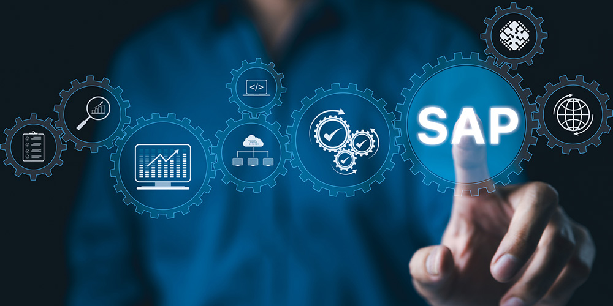

SAP-Schnittstellen – Ein umfassender Überblick

SAP-Systeme bilden in vielen Großunternehmen das Rückgrat sämtlicher Geschäftsprozesse: von der Buchhaltung und Materialwirtschaft über das Personalwesen bis hin zu Vertrieb und Kundenmanagement. Da in diesen Systemen enorme Mengen an unternehmenskritischen Daten liegen, ist eine reibungslose und zugleich sicherheitsbewusste Kommunikation zwischen SAP und anderen Anwendungen unverzichtbar. Verschiedene Schnittstellen sorgen dafür, dass externe Systeme – ob hausintern oder extern – auf Daten und Funktionen der SAP-Umgebung zugreifen können.
1. Warum Schnittstellen so wichtig sind
Unternehmen operieren selten in einer abgeschotteten IT-Landschaft. Im Gegenteil: Es gilt, Daten aus unterschiedlichsten Quellen miteinander zu verknüpfen und zu verarbeiten. Ein Onlineshop will die Bestelldaten ins SAP-System einspielen, Maschinen senden Sensordaten in Echtzeit an das Lagerverwaltungssystem, und externe Dienstleister benötigen Informationen über Personal- oder Finanzprozesse.
Ohne eine durchdachte Schnittstellenstrategie führt das oft zu Datensilos, Redundanzen oder Fehlern bei der Datenverarbeitung. Daher stellt SAP verschiedene Technologien bereit, um einen konsistenten Datenfluss zu ermöglichen – ganz gleich, ob es um das Abfragen von Beständen, das Anlegen von Kundenstammdaten oder das Ausführen komplexer Transaktionen geht.
2. Die wichtigsten SAP-Schnittstellen
2.1 Remote Function Call (RFC)
Eine der ältesten und bekanntesten Methoden, um mit SAP-Systemen zu kommunizieren, ist der RFC (Remote Function Call). Dabei handelt es sich um ein eigenes Protokoll, das Funktionsbausteine (Funktionsmodule) in SAP aufruft. Entwickelt wird meist in ABAP, wobei die entsprechenden Bausteine später von externen Programmen (oder anderen SAP-Systemen) angesprochen werden können.
Vorteil: RFC ist sehr tief in der SAP-Architektur verankert und
eignet sich gut, um einzelne Funktionen oder Transaktionen aus der Ferne anzustoßen.
Nachteil: Da RFC oft auf proprietäre SAP-Bibliotheken setzt,
müssen externe Anwendungen spezielle SAP-Libraries einbinden. Außerdem erfordert
die richtige Konfiguration Kenntnisse über SAP-spezifische Sicherheits- und
Berechtigungsobjekte.
2.2 OData-Services
OData (Open Data Protocol) ist ein webbasiertes Protokoll, das auf REST-Architekturprinzipien fußt. SAP hat OData-Services integriert, damit Datenbereitstellung und -abfrage über standardisierte HTTP-Aufrufe erfolgen können.
Vorteil: RESTful-APIs sind weit verbreitet und erleichtern
die Integration in moderne Web- oder Mobile-Anwendungen. JSON oder XML können
als Datenformate genutzt werden.
Nachteil: Man muss bei der Erstellung von OData-Services
im Gateway oder in der entsprechenden SAP-Komponente sorgfältig auf
Berechtigungskonzepte und Performance achten – sonst entsteht
schnell eine neue Angriffsfläche.
2.3 SOAP-Schnittstellen
In vielen (älteren) Unternehmenslandschaften spielt SOAP (Simple Object Access Protocol) eine wichtige Rolle. SAP liefert standardmäßig Webservice-Funktionen, die auf SOAP basieren und über WSDL-Dateien (Web Services Description Language) definiert sind.
Vorteil: SOAP ist ein standardisiertes Protokoll und war
lange Zeit das bevorzugte Werkzeug für serviceorientierte Architekturen (SOA).
Nachteil: SOAP wirkt heute oft schwerfällig gegenüber
schlankeren RESTful-Ansätzen. Dennoch bleibt es ein wichtiger Baustein,
gerade in komplexen, gewachsenen SAP-Landschaften.
2.4 BAPI und IDoc
BAPIs (Business Application Programming Interfaces) sind spezielle Programmierschnittstellen in SAP, mit denen standardisierte Zugriffe auf Geschäftsobjekte möglich sind (z. B. Kunden, Aufträge, Materialien). IDocs (Intermediate Documents) hingegen werden häufig für den asynchronen Datenaustausch genutzt und erlauben, große Datenmengen strukturiert zwischen Systemen zu transportieren.
Wer BAPIs und IDocs korrekt nutzt, kann SAP-Daten automatisiert an externe Systeme weitergeben oder umgekehrt empfangen, etwa Bestellungen aus einem Webshop oder Lieferdaten von Logistikpartnern.
3. Sicherheit und Berechtigungen
Da über SAP-Schnittstellen mit sensiblen Daten wie Kundendaten, Finanzzahlen oder Personalinformationen hantiert wird, ist Sicherheit hier ein zentrales Thema. Authentifizierung und Autorisierung müssen wasserdicht gestaltet sein, damit kein Unbefugter Daten abgreifen oder kritische Vorgänge ausführen kann.
SAP-Berechtigungsobjekte spielen eine Schlüsselrolle: Jede Funktion, ob RFC-Baustein oder OData-Service, sollte nur von Nutzern mit den entsprechenden Rollen und Profilen aufgerufen werden dürfen. Zusätzlich sorgen Verschlüsselung (z. B. HTTPS oder SNC bei RFC) und solide Netzwerk-Segmentierung für zusätzliche Sicherheit.
4. Typische Schwachstellen und Risiken
- Fehlkonfigurierte RFC-User: Ein Service-User mit zu weitreichenden Rechten kann einem Angreifer Türen zu kritischen SAP-Transaktionen öffnen.
- Offene OData-Endpoints: Werden OData-Services zu großzügig konfiguriert, lassen sie Datenlecks zu oder ermöglichen ungewollte Schreibzugriffe auf kritische Tabellen.
- Unverschlüsselte Kommunikation: Alte Verbindungen ohne TLS oder SNC können den Datenverkehr zwischen SAP und dem externen System für Angreifer abhörbar machen.
- Fehlerhafte Rechtemodelle: Rollen und Berechtigungen, die für Tests großzügig angelegt wurden, aber nicht wieder eingeschränkt wurden, führen zu unangemessenen Zugriffsrechten.
5. Best Practices und Fazit
Wer eine SAP-Landschaft betreibt, sollte ganzheitlich denken: ein geregeltes Identitäts- und Berechtigungsmanagement, die konsequente Nutzung von verschlüsselten Verbindungen (HTTPS, SNC), sowie regelmäßige Sicherheitsaudits gehören zum Pflichtprogramm. Dafür bietet SAP selbst viele Tools und Anwendungen (z. B. das Security Audit Log), aber auch externe Scanner können helfen, Schwachstellen frühzeitig aufzudecken.
SAP-Schnittstellen sind das Bindeglied zwischen den zentralen Unternehmensdaten und der Außenwelt. Daher sollte jede Integration – ob via RFC, OData, SOAP, BAPI oder IDoc – genau geplant und abgesichert werden. Wer die technischen Möglichkeiten gekonnt nutzt, erschließt sich eine enorme Automations- und Skalierungskraft. Wer allerdings fahrlässig handelt oder Konfigurationsfehler übersieht, riskiert empfindliche Datenlecks und massive Schäden am Kerngeschäft. Mit dem richtigen Know-how und Sorgfalt lassen sich jedoch leistungsfähige und sichere Integrationen schaffen, die den Erfolg eines Unternehmens langfristig stützen.